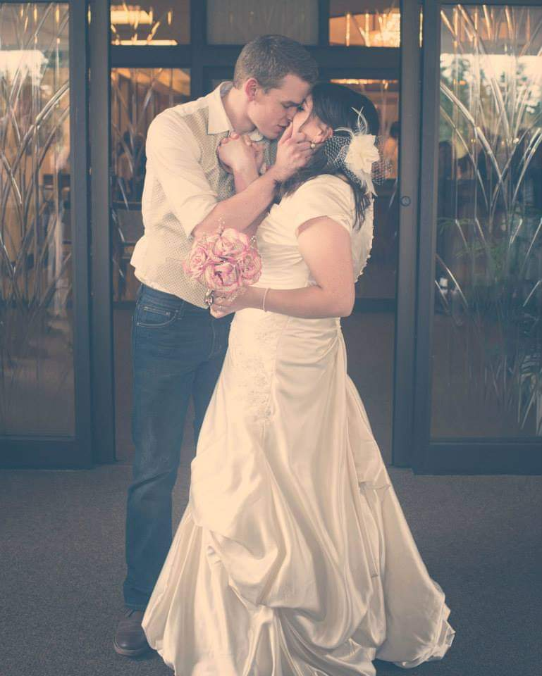

Kyle Boat|WDD 130
Hello my name is Kyle Boat. I am a husband to the greatest wife in the world. She is literally my favorite person on this earth. I couldn't imagine one day with out her. She's so supportive of everything I do. I tried to take these courses a few years ago but it just got to hard to juggle home, work, and school so I quit. Honestly I thought maybe once we got some stability that I would try again. I never thought that it would have been this soon. One day out of nowhere I just felt it was time to go back to school. We had some stability in our lives now. I have a pretty decent paying job and we just bought our first home in January. So I told Bret that I wanted to go back to school and she was on board, no questions asked. So here I am, giving it another shot. We have four awesome kids together. They are our whole world. When I am not working or doing school work I am always spending time with my family.